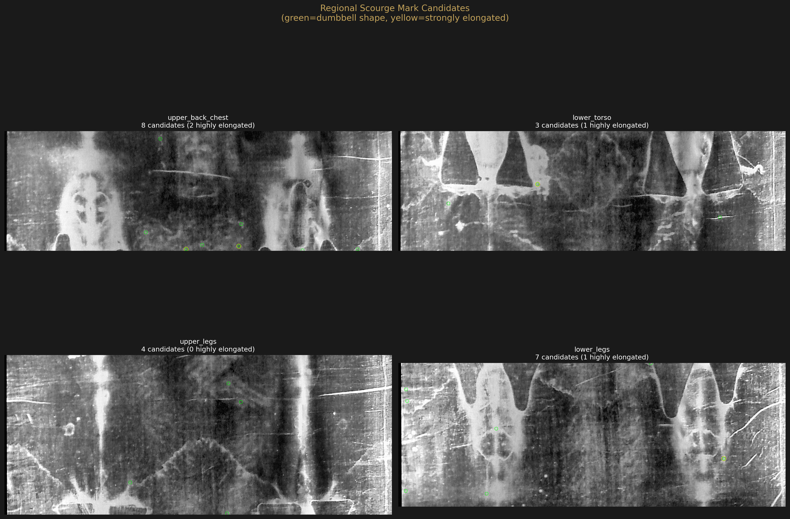
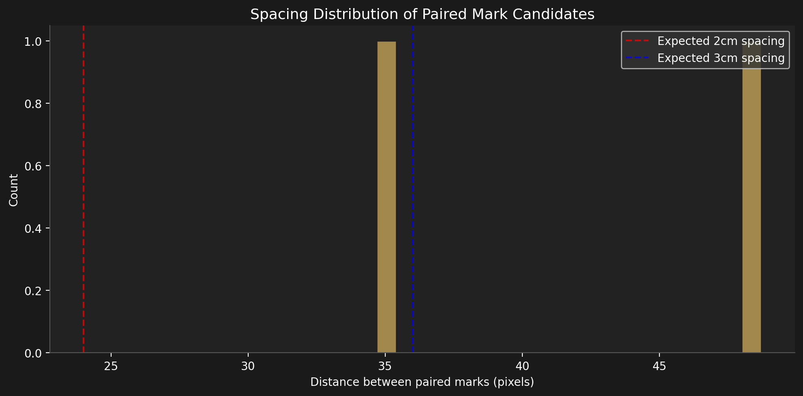

Deep Pattern Analysis
Scourge Mark Detection
Can computational image analysis detect the ~120 scourge marks identified by Shroud researchers? Two approaches tested — basic thresholding and bandpass-filtered dumbbell shape detection.
Background
Published Shroud literature identifies approximately 120 scourge marks across the full body, consistent with a Roman flagrum — a multi-tipped whip with metal or bone weights at the leather thong ends. Each strike leaves a characteristic “dumbbell” pattern: two small impact marks connected by a thin line, spaced 2–3 cm apart (the distance between flagrum tips).
The question: can we computationally detect these marks from the photographic data alone, without multi-spectral imaging?
Approach 1: Basic Thresholding
Our initial approach (Wave 2) used simple high-frequency residual extraction: raw CLAHE depth minus Gaussian-smoothed (σ=20) body surface, thresholded at 1.5σ above the mean in the torso region, filtered for small connected components (5–80 pixel area).
Result: 832 candidates — approximately 7× the expected count. The method cannot distinguish flagrum marks from cloth weave intersections and other texture artifacts at ~12 px/cm body resolution.
Approach 2: Bandpass + Shape Filtering
The refined approach uses three stages of filtering designed to isolate features at the specific spatial scale and morphology of flagrum marks:
Stage 1: Bandpass filtering
Instead of a simple smooth-subtract, we compute a band-pass residual: medium-scale smooth (σ=8) minus large-scale body smooth (σ=25). This isolates mid-frequency features (5–15mm range) while rejecting both cloth weave texture (1–2mm, too small) and body shape contours (>30mm, too large).
Stage 2: Dumbbell shape detection
Connected components are filtered by morphological criteria matching flagrum strike marks:
- Area: 8–150 pixels (corresponding to ~5–12mm marks)
- Aspect ratio: 1.3–5.0 (elongated but not thread-like)
- Morphological opening with 3×3 elliptical kernel to remove noise
Stage 3: Flagrum spacing analysis
Roman flagra typically had 2–3 tips spaced 2–3 cm apart. At ~12 px/cm, paired marks should appear 18–50 pixels apart. We search for candidate pairs within this spacing range.
Results

| Metric | Approach 1 (Basic) | Approach 2 (Bandpass) | Literature |
|---|---|---|---|
| Total candidates | 832 | 22 | ~120 |
| Detection ratio | 6.9× over | 0.18× under | 1.0× |
| Paired marks (flagrum spacing) | Not tested | 2 pairs | ~40–60 pairs |
| Mean pair spacing | — | 41.7 px (~3.5 cm) | 2–3 cm |
Regional Distribution

| Region | Raw Components | Dumbbell Candidates | Highly Elongated |
|---|---|---|---|
| Upper back/chest | 36 | 8 | 2 |
| Lower torso | 42 | 3 | 1 |
| Upper legs | 42 | 4 | 0 |
| Lower legs | 45 | 7 | 1 |
Spacing Distribution

Analysis
The two approaches bracket the truth
Basic thresholding over-detects by 7× (832 candidates) because it cannot distinguish scourge marks from cloth texture. Bandpass + shape filtering under-detects by 5× (22 candidates) because the morphological criteria are too strict at this resolution. The true count (~120) falls between the two approaches.
Resolution is the fundamental constraint
At ~12 pixels per centimeter body scale, a 10mm flagrum mark occupies only ~12 pixels. A dumbbell pattern (two tips + connecting line) would be ~20–30 pixels total. This is at or below the minimum for reliable shape analysis using connected components. The bandpass filter helps isolate the correct spatial scale but cannot create resolution that isn’t in the source image.
What would be needed
- Higher-resolution source: 3–5× higher body resolution (~40–60 px/cm) would make individual flagrum tips distinguishable
- Multi-spectral data: UV fluorescence photographs specifically highlight blood (which fluoresces differently from body image) and would provide ground truth for mark locations
- Machine learning: A trained detector using annotated examples from high-resolution multi-spectral sources could potentially work on lower-resolution photographic data
Honest Assessment
The bandpass approach is methodologically sound but the source resolution is insufficient for reliable scourge mark detection. We can confirm that the Shroud image contains mid-frequency features in the expected spatial scale (5–15mm), but we cannot definitively identify them as scourge marks rather than cloth texture artifacts. This question requires higher-resolution or multi-spectral source data to answer.